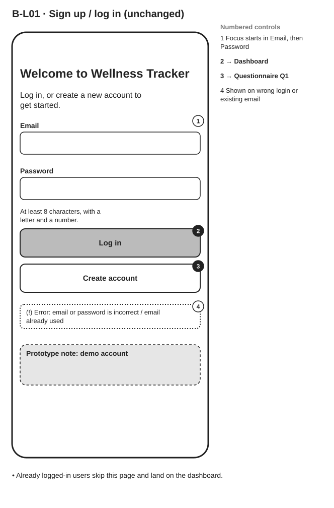
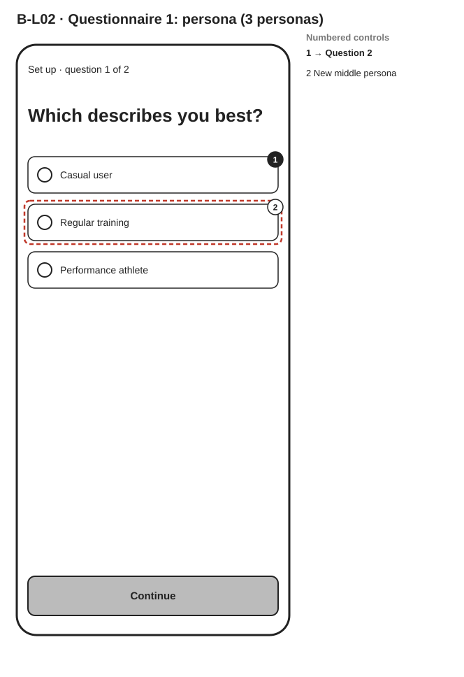
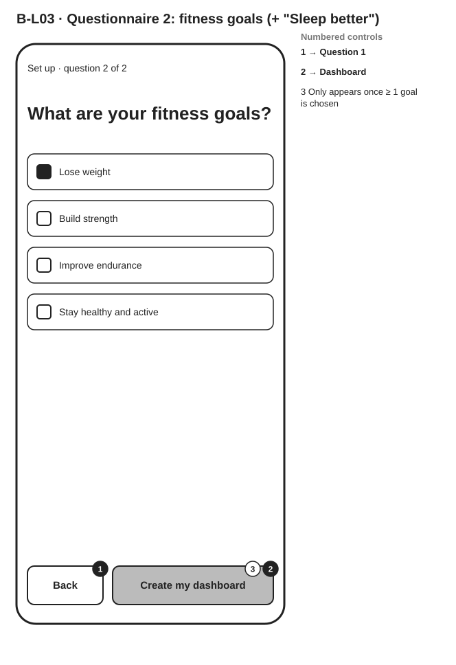
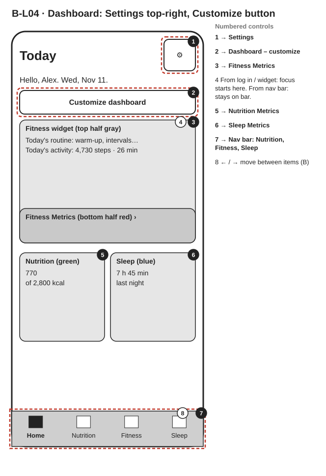
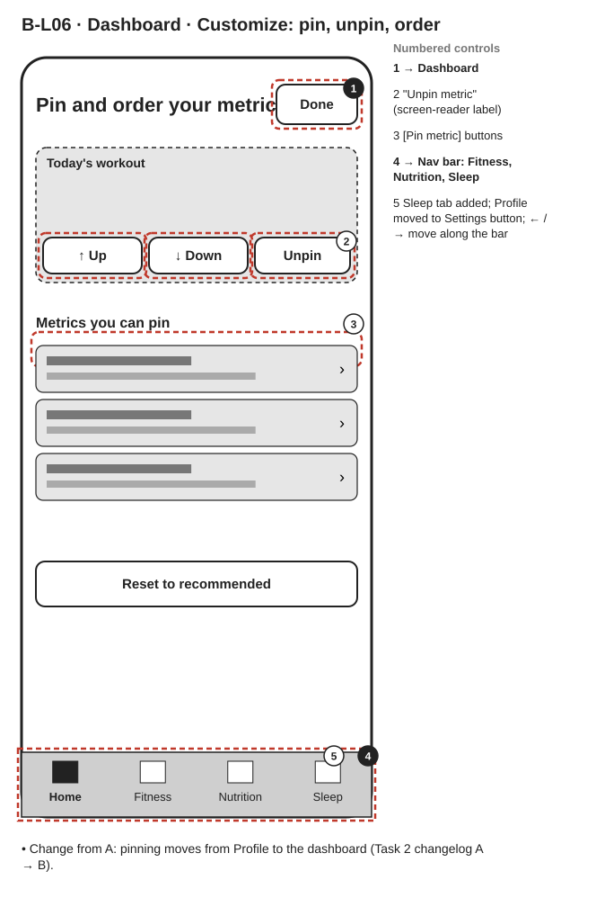
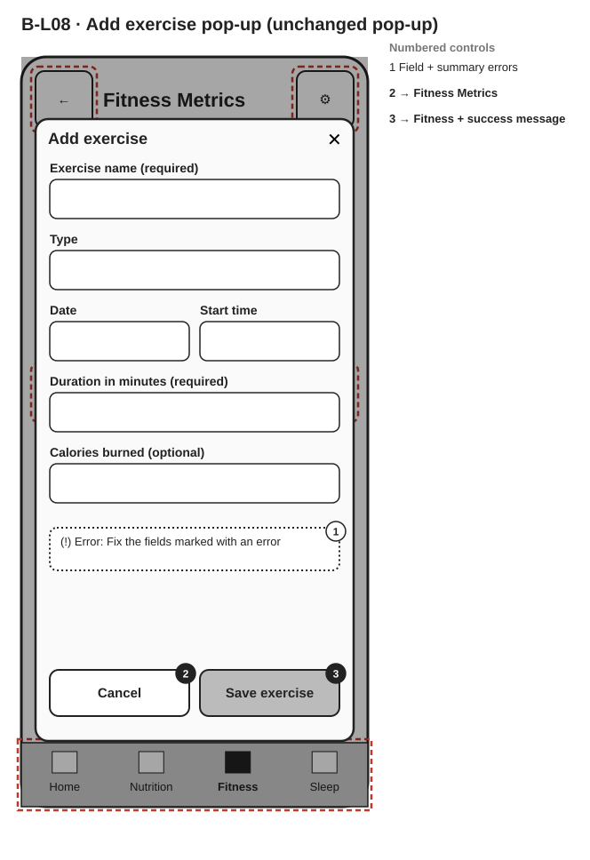
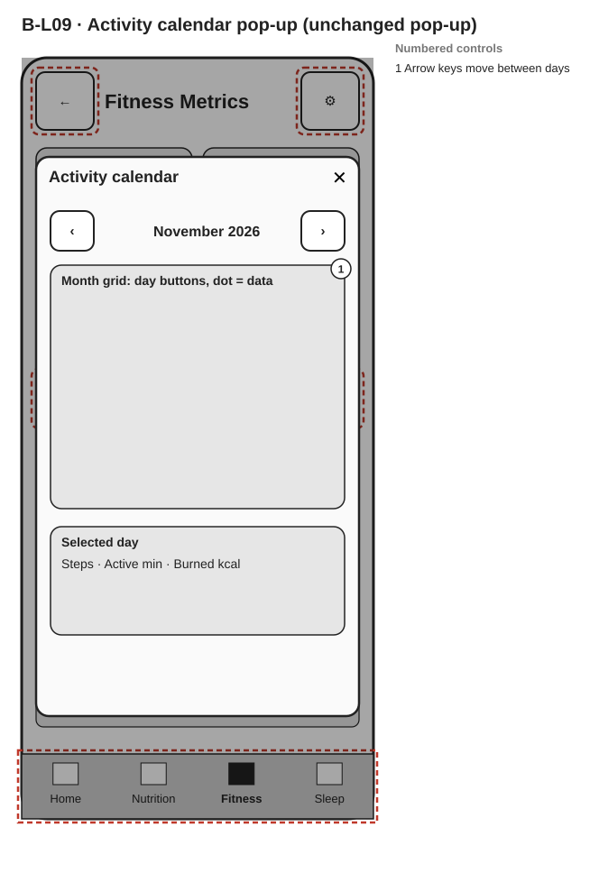
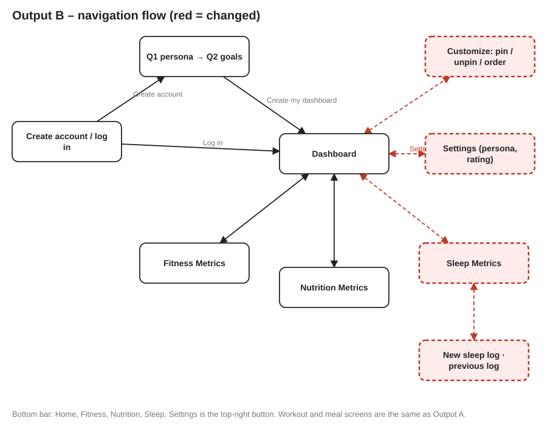

Changes from Output A are outlined in red: sleep metrics, three personas with more detail for performance users, pin / unpin / order on the dashboard, Settings top-right with the Task 3 Output B keyboard rules, recommendations, the adaptive "more data?" question and the 1–5 rating.







